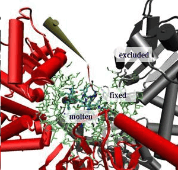
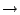

AutoIMD is a means of quickly starting a NAMD molecular dynamics
simulations from atomic coordinates in VMD. The simulation can then be visualized in
real-time on the VMD graphics screen. With the appropriate devices (such
as a VRPN tracker), the user can also interact with a running simulation
and apply forces to individual atoms or residues. Such an interaction is
extremely useful when building and modeling systems, and can also be used
to gain precious insights by tinkering with key residues and atoms.
While the Interactive Molecular Dynamics
(IMD) technology that enables
all of this is an intrinsic part of VMD, AutoIMD makes it much more
accessible and useful. In general terms, AutoIMD adds the following capabilities:
|  |
Fig. 1 is an example of an AutoIMD session. When using
AutoIMD, you can divide up your system into three distinct regions,
shown in the figure:1
To get started using AutoIMD with your system, you will need the following:
1. Start VMD, load your system (make sure to include a PSF file), and start AutoIMD
from the Extensions  autoimd menu item (in the VMD main window). The AutoIMD window
(Fig. 2) should appear.
2. [OPTIONAL] Select the SettingsSimulation Parameters... menu item from
the AutoIMD window. The dialog box shown in Fig. 3 should pop up. Use this dialog box to tell AutoIMD the location of your scratch directory.
You may also specify an alternate set of CHARMM parameter files, if your system contains non-standard residues.
3. Specify the molten zone by entering a VMD atom selection into the text box.
NOTE: Because
of the way that AutoIMD currently works, you should avoid referencing atoms by their index
or residue number (since they will change in the simulated system), instead, refer to
atoms using their name, resid and segname or chain, etc.
4. Optionally, you can also change the fixed zone that is used to hold the molten zone into place, although the default should work.
Note that the fixed zone that you specify might later be adjusted by AutoIMD to include complete
residues instead of residue fragments, this is normal.
5. Pick a server and adjust the number of processors. If you want to run the simulation on the same
computer that VMD is running on, you would pick ``Local" and ignore the processors field.
6. Click the Submit button to start your NAMD simulation.
NOTE: If this is your first time running AutoIMD, it will prompt you to create
a scratch directory in which AutoIMD will store its temporary files.
The scratch directory needs to be accessible on both
your local machine and the host on which NAMD will run. Do not store your own files in this directory.
NOTE: If you get an error message saying ``Unable to
open psf file xxx.psf.", you need to reload your PSF file
on top of your current molecule one more time and click Submit again.
7. Click Connect to connect to the simulation with IMD.
You should see the atoms start to move.
NOTE: It might take a few seconds for the NAMD
simulation to get started. During this time, VMD will not be able
to connect and you will see some error messages of the type:
Error connecting to host on port xxxx. This is
normal, and these errors can usually be ignored. VMD will connect as soon
as NAMD is ready.
NOTE: If after waiting a long time, AutoIMD still does not connect, your
simulation may have had trouble starting properly. Make sure that your simulation is actually running.
If not, your NAMD job may have aborted. Check the NAMD output in the autoimd.log file in your scratch directory to
find the reason (NAMD will say there why it crashed, etc.). Once this is fixed, you can click on Discard and then Submit, to try again.
8. Interact with your system for a while. You can use the Mouse Force menu items, or a 3D tracker to pull on your atoms. Alternatively, just can also just watch your system equilibrate. At any
point during your simulation, you can save a PDB snapshot of your system by
choosing the File Save Full PDB As... menu item.
9. When you are done, click Finish. The coordinates
of your atoms in your originally loaded molecule will updated, and the
simulation will stop. Discard also stops the simulation, but
does not update the coordinates and you will be brought back to your initial state.
Use this button it if anything goes wrong.
AutoIMD allows you to set a number of adjustable parameters, through the Simulation Parameters window (Settings Simulation Parameters menu item). These options are described here:
If you use AutoIMD a lot, you might wish that could set your default settings
in a startup script and not have to worry about typing them in each time. Almost
everything in AutoIMD is customizable.
To set your default scratch directory and CHARMM parameter file, you can include
the following lines (provided as an example only) in your .vmdrc startup file. Be sure to use absolute paths!
package require autoimd
autoimd set scratchdir /home/user/scratchdir
autoimd set parfiles {/home/par_paramfile1.inp /home/par_paramfile2.inp ...}
[...]
For more advanced customization, it is recommended that you copy the file
autoimd-settings.tcl that is distributed with the AutoIMD package, to your local
directory. You can then edit it to suit your needs (it is self-documented). Have it be run at
startup by adding the following line to your .vmdrc file (be sure to use the right path):
source autoimd-settings.tcl
If you have access to a local cluster for running NAMD, this file is also where you would tell
AutoIMD how to access it.
AutoIMD uses multiple representations to help you keep track of the
molten, fixed, and excluded zones in your simulation. When a
simulation is submitted, two molecules are used at once: one
containing the original, complete structure and one containing just
the atoms needed for IMD. To avoid showing the same atoms twice,
AutoIMD displays only the excluded and fixed zone of the original molecule.
To accomplish this, the atomselection macros imdexclude,
imdfixed, and imdmolten are defined to correspond to
the three regions of the simulation. You can take advantage of them to
select desired parts of your simulations.
You can customize both molecules' representations with the VMD
Graphics Form, just as in a normal VMD session. AutoIMD saves the
representation used for the IMD molecule when ending a simulation and
reloads it when a new simulation is submitted. The default IMD representation
can be permanently customized through AutoIMD's imdrep variable.
Here is an example of how it can be used:
autoimd set imdrep {
mol representation Bonds 0.300000 6.000000
mol color Name
mol selection "imdmolten and not hydrogen and not water"
mol material Opaque
mol addrep $imdmol
mol representation VDW 1.000000 8.000000
mol color Name
mol selection "imdmolten and numbonds 0"
mol material Opaque
mol addrep $imdmol
mol representation Bonds 0.300000 6.000000
mol color Name
mol selection "imdmolten and water"
mol material Opaque
mol addrep $imdmol
mol representation Tube 0.400000 6.000000
mol color ColorID 12
mol selection "imdfrozen"
mol material Opaque
mol addrep $imdmol
}
To view the current IMD representation, you would type (at the VMD prompt):
puts $AutoIMD::imdrep
For additional help, as well as to provide feedback, contact us as vmdks.uiuc.edu.